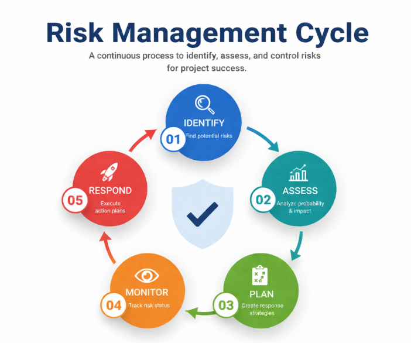

Anticipate potential problems before they happen and turn uncertainty into controlled outcomes.
Software projects face uncertainty due to changing requirements, technical challenges, and resource constraints. Risk management helps you identify risks early and prepare responses before they become problems.
Risk management is the process of identifying, analyzing, and responding to risks throughout the project lifecycle. A risk is any uncertain event that could affect project objectives — positively (opportunity) or negatively (threat).
Risk Management Cycle: Identify → Assess → Plan → Monitor → Respond

Eliminate the threat entirely by changing the project plan
Example: Use proven technology instead of experimentalReduce probability or impact to an acceptable level
Example: Add code reviews to catch defects earlyShift the impact to a third party
Example: Purchase insurance or use managed servicesAcknowledge the risk and prepare contingency plans
Example: Add buffer time for known delaysRisk Score = Probability × Impact | Critical risks require immediate action
Unfamiliar technology, integration complexity, performance issues, security vulnerabilities, technical debt
Key personnel departure, skill gaps, communication breakdowns, team conflicts, remote collaboration issues
Unrealistic deadlines, scope creep, inadequate estimation, poor stakeholder engagement, resource constraints
Changing business priorities, regulatory changes, vendor dependencies, market shifts, budget cuts
Risk Identified: Backend API may change during development (Probability: Medium, Impact: High)
Response Strategy: Build abstraction layer between app and API + regular sync with backend team
Outcome: When API changed in month 3, impact was only 2 days of work instead of 3 weeks
Proactive risk management turned a potential crisis into a minor adjustment.
Risk identification happens upfront during planning phase. Formal risk register is maintained. Changes require change control. Less flexibility for emerging risks.
Continuous risk discussions in sprint planning, reviews, and retrospectives. Short iterations allow quick pivots when risks materialize. Risks are addressed incrementally.